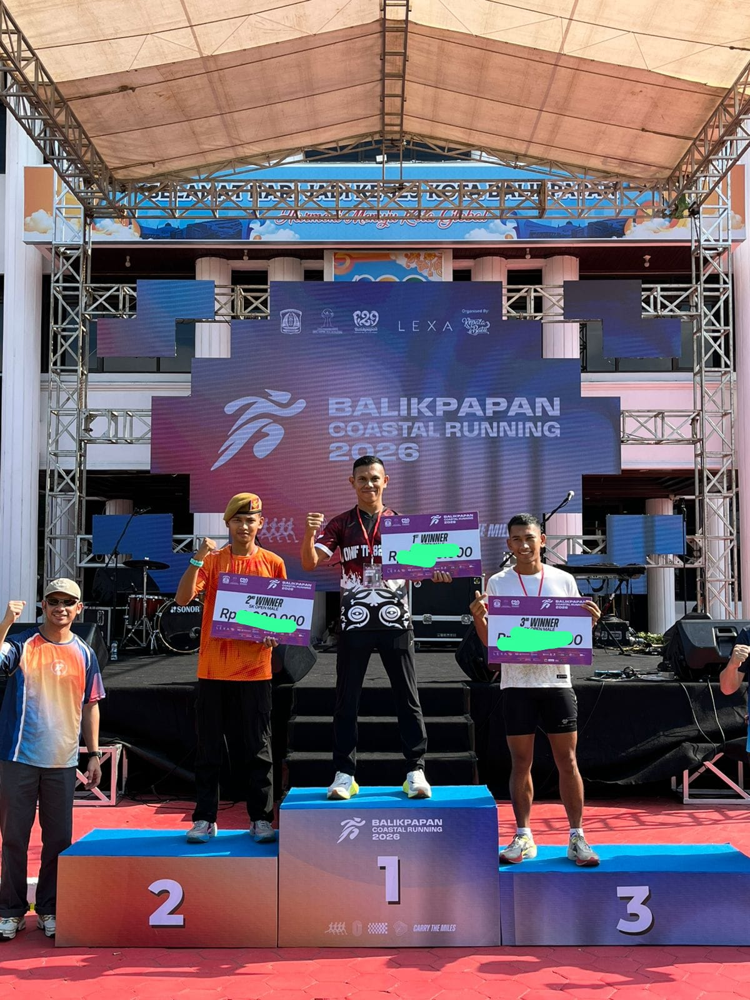
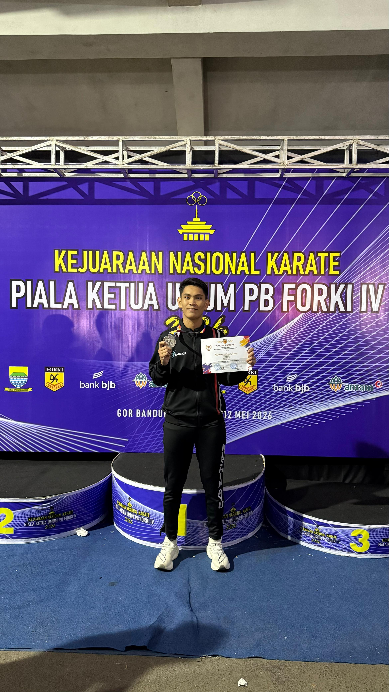
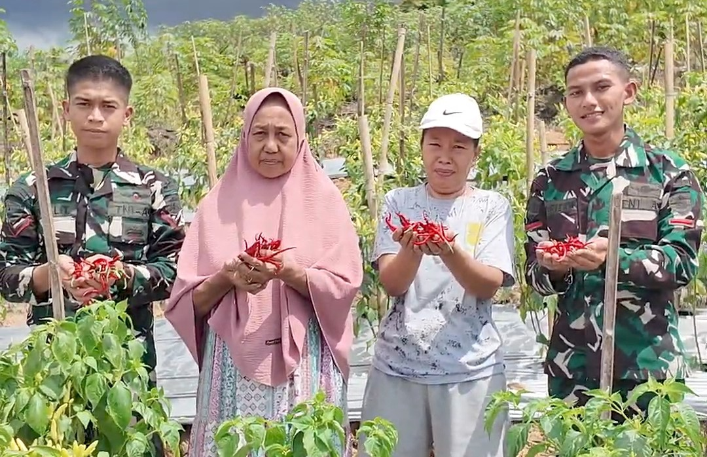
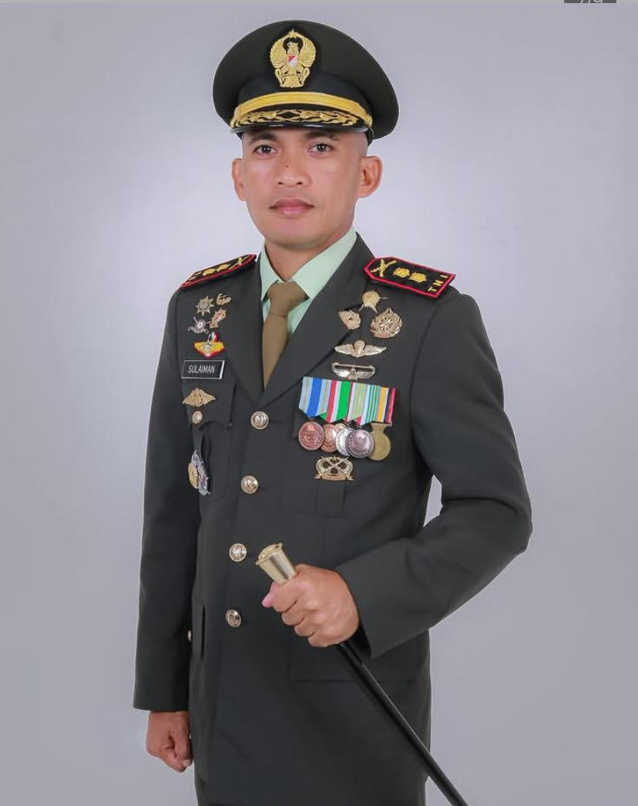
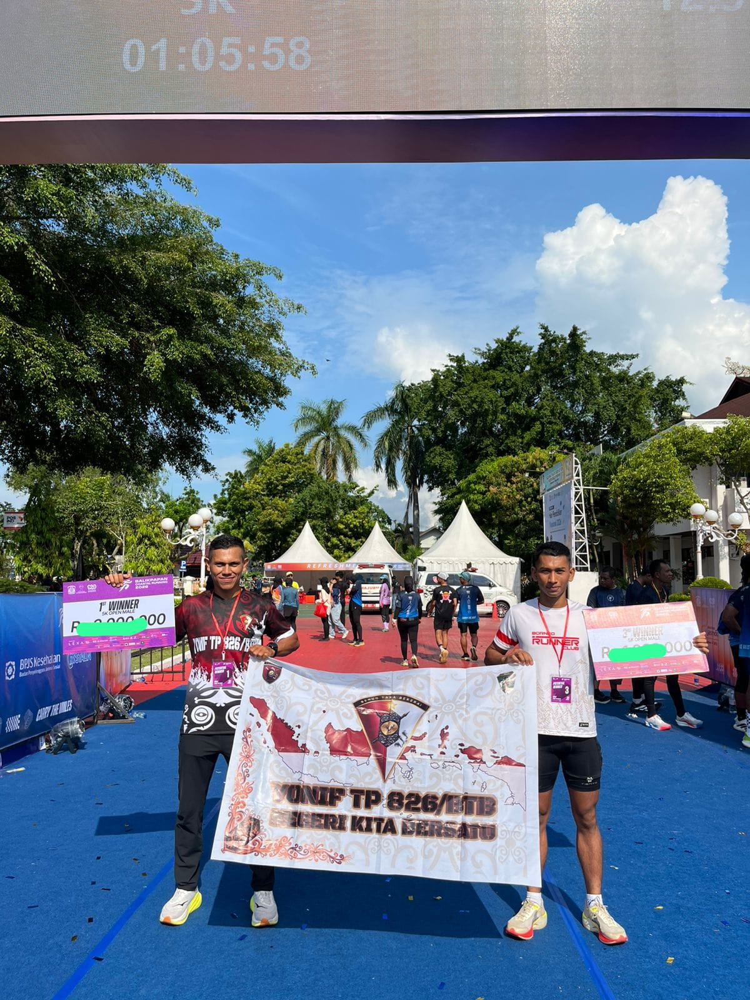
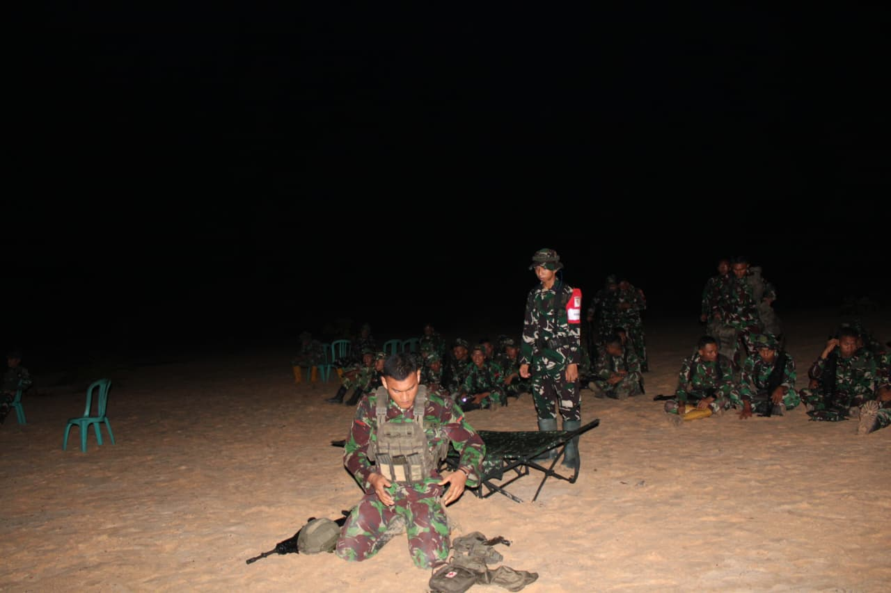
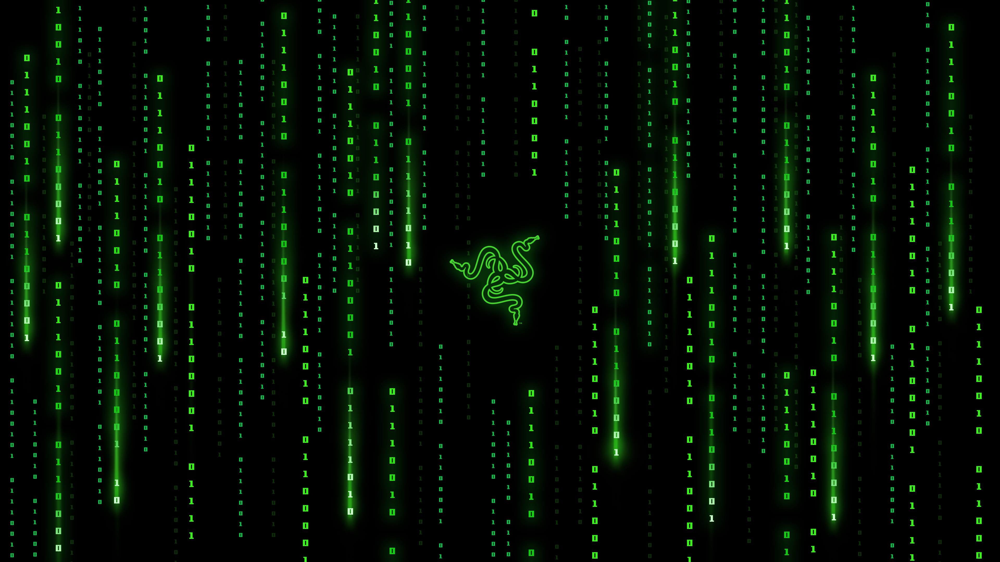

Beranda
Portal Informasi Resmi Yonif TP 826/Benuo Taka Bekerai
Video Profil Satuan
Jika video tidak muncul, buka langsung di sini.
Berita Kegiatan Terbaru

3 Mei 2026
Prajurit Yonif TP 826/BTB Meraih Juara di "BALIKPAPAN COASTAL RUNNING 2026"
Serda Robby Ikbal Siergar Mendapat Juara 1 dan Serda Sejati Ginting mendapat Juara 3 pada event lari Balikapan Coastal Running 2026 yang diadakan di Balikpaan tanggal 3 Mei 2026, Baca Selengkapnya →

12 MEI 2026
Prajurit Yonif TP 826/BTB Raih Medali Perak pada Kejurnas Karate Piala Ketua Umum PB FORKI 2026
Bandung, Prajurit Kodam VI/Mulawarman kembali menorehkan prestasi membanggakan di tingkat nasional. Kali ini, prajurit Yonif TP 826/BTB Brigif TP 85/BTC berhasil meraih Juara II dan membawa pulang medali perak pada ajang Kejuaraan Nasional (Kejurnas) Karate Piala Ketua Umum PB FORKI Tahun 2026 yang berlangsung di GOR C-Tra Arena, Kota Bandung, Jawa Barat. Kejuaraan bergengsi yang diikuti karateka terbaik dari seluruh Indonesia tersebut digelar sejak 9 hingga 12 Mei 2026 dan dibuka secara resmi oleh Ketua Umum PB FORKI, Hadi Tjahjanto. Prestasi membanggakan tersebut diraih oleh Serda Muhammad Padi Fauzan Syam yang tampil pada nomor Kumite -75 Kg U-21 Putra mewakili Perguruan Kushin Ryu M. Karate Do Indonesia (KKI). Dengan semangat juang tinggi dan kemampuan teknik yang matang, ia mampu menembus babak final dan meraih medali perak setelah melewati pertandingan yang berlangsung ketat dan kompetitif. Keberhasilan tersebut menjadi bukti bahwa prajurit Kodam VI/Mulawarman tidak hanya mampu menjalankan tugas pokok di satuan, namun juga memiliki prestasi membanggakan di bidang olahraga serta mampu bersaing di tingkat nasional.
Baca Selengkapnya →
20 APRIL 2026
Panen Cabai Bersama Masyarakat Hasil Lahan Ketahanan Pangan
Program ketahanan pangan satuan berhasil panen. "MERAHNYA CABAI,ERATNYA PERSAUDARAAN". Panen cabai bersama masyarakat-- bukti bahwa ketahanan pangan dimulai dari kebersamaan di lapangan dan Hasilnya dibagikan untuk warga logistik...
Baca Selengkapnya →Profil Satuan
Data lengkap Komandan dan Kesatuan Yonif TP 826/BTB
Video Profil Satuan
Jika video tidak muncul, buka langsung di sini.
Komandan Batalyon

Letkol Inf Sulaiman S.I.P M.Han
Akmil 2008
Riwayat Jabatan
Data Kesatuan
Tugas Pokok
Klik setiap poin untuk melihat detail tugas
Sejarah Satuan
Perjalanan pengabdian Yonif TP 826/Benuo Taka bekerai dalam menjaga kedaulatan NKRI di Kalimantan Timur
Latar Belakang Pembentukan
Batalyon Infanteri Teritorial Pembangunan 826/Benuo Taka Bekerai Peraturan Panglima TNI Nomor 19 Tahun 2024 sebagai respon terhadap dinamika strategis pembangunan Ibu Kota Nusantara (IKN) di Kalimantan Timur dan sebagai bagian strategi pertahanan negara untuk mendukung pembangunan nasional,ketahanan pangan, dan pemberdayaan masyarakat, khususnya di wilayah rawan.
Satuan ini mengemban tugas pokok Operasi Militer Selain Perang (OMSP) dengan fokus pada pembinaan teritorial, bantuan pembangunan infrastruktur, dan penguatan ketahanan wilayah penyangga IKN. Nama "Benuo Taka Bekerai" diambil dari bahas paser Kalimantan Timur yang mempunyai arti "TANAH KITA BERSAMA".
Tonggak Sejarah
Prestasi & Penghargaan
Daftar Komandan Batalyon
| No | Nama | Pangkat | Periode | Keterangan |
|---|---|---|---|---|
| 1 | Sulaiman S.I.P M.Han | Letkol Inf | Mar 2025 - Sekarang | Aktif |
* Data akan diupdate seiring pergantian kepemimpinan satuan
Struktur Organisasi
Susunan organisasi dan pejabat utama Yonif TP 826/Benuo Taka Bekerai
Bagan Struktur Komando
Pejabat Utama
Komandan Kompi
| Satuan | Nama Komandan | Pangkat |
|---|---|---|
| Kima | Letda Inf Miftahul | Letda |
| Kipan A | Kapten Inf Budi Hernawan | Kapten |
| Kipan B | Kapten Inf Adhie | Kapten |
| Kipan C | Kapten Inf Bagus Aji | Kapten |
| Ki Bant | Letda Inf Hamdan Anwar | Letda |
| Ki Pertanian | Letda Inf Latief | Letda |
| Ki Peternakan | Letda Inf Rusli Ikhsan | Letda |
| Ki Zeni | Kapten Czi Hadi | Kapten |
| Ki Medis | Kapten Ckm Hendar Juliana S.Farm | Kapten |
Kegiatan & Agenda
Daftar lengkap kegiatan, latihan, dan agenda Yonif TP 826/BTB
Sorotan Kegiatan
Highlight program unggulan dan aksi satuan terbaru.
Alur Kegiatan
Setiap program dirancang untuk mendukung kesiapan operasional, pemberdayaan masyarakat, dan ketahanan wilayah. Lihat kategori untuk fokus sesuai jenis kegiatan.
Perencanaan dan briefing sebelum kegiatan.
Eksekusi sesuai standar keselamatan dan efektivitas.
Review hasil untuk peningkatan kegiatan berikutnya.
LATBAKPURLAN
LATIHAN22 April 2026
Lapangan Tembak Satuan
Seluruh Prajurit
1 Minggu
Deskripsi: Latihan Menembak Tempur Lanjutan (LATBAKPURLAN) merupakan pelatihan intensif untuk meningkatkan kemampuan tempur perorangan dan satuan. Kegiatan ini meliputi latihan taktis, penguasaan senjata, dan teknik pertempuran modern. Dengan semangat pantang menyerah, seluruh prajurit Yonif TP 826/BTB mengikuti program ini sebagai bagian dari pembinaan kemampuan operasional satuan.
Panen Cabai Bersama
SOSIAL20 April 2026
Lahan Ketahanan Pangan
Prajurit & Masyarakat
Beberapa Ton Cabai
Deskripsi: Program Ketahanan Pangan Yonif TP 826/BTB mencapai hasil panen yang gemilang. Dengan moto "Merahnya Cabai, Eratnya Persaudaraan", prajurit satuan bekerja bersama dengan petani dan masyarakat lokal untuk memanen cabai dari lahan demonstrasi pertanian. Hasil panen didistribusikan kepada masyarakat dan warga logistik satuan sebagai wujud nyata dukungan terhadap ketahanan pangan nasional.
Balikpapan Coastal Running 2026
OLAHRAGA3 Mei 2026
Balikpapan
Juara 1 & Juara 3
Se-Kalimantan
Deskripsi: Prajurit Yonif TP 826/BTB meraih prestasi gemilang dalam event lari Balikpapan Coastal Running 2026. Serda Robby Ikbal Siergar berhasil meraih Juara 1, sementara Serda Sejati Ginting meraih Juara 3 dalam kategorinya. Prestasi ini menunjukkan komitmen satuan terhadap pengembangan SDM dan representasi TNI di tingkat regional. Event ini menjadi momentum untuk menunjukkan semangat, disiplin, dan dedikasi prajurit dalam setiap aspek kehidupan.
Komsos & Bakti TNI
SOSIALBerkelanjutan
Penajam Paser Utara
Ribuan Warga
Pemberdayaan
Deskripsi: Program Komunikasi Sosial dan Bakti TNI merupakan komitmen utama Yonif TP 826/BTB dalam menjalankan tugas pembinaan teritorial. Melalui TMMD, bedah rumah tidak layak huni, perbaikan infrastruktur desa, dan berbagai program sosial lainnya, satuan terus berupaya menciptakan ruang dan alat juang yang tangguh di wilayah. Setiap kegiatan dirancang untuk meningkatkan kesejahteraan masyarakat dan memperkuat hubungan TNI-rakyat.
Pelatihan Wawasan Kebangsaan
LATIHANTiap Bulan
Markas Satuan
Prajurit & Masyarakat
4 Pilar Kebangsaan
Deskripsi: Program pelatihan wawasan kebangsaan dirancang untuk meningkatkan kesadaran bela negara dan nasionalisme baik bagi prajurit maupun masyarakat sipil. Melalui sosialisasi Pancasila, UUD 1945, NKRI, dan Bhinneka Tunggal Ika, satuan berupaya memperkuat fondasi ideologi nasional dan semangat cinta tanah air. Kegiatan ini menjadi bagian integral dari strategi penguatan nilai-nilai kebangsaan di wilayah teritorial.
Tentang Kegiatan Satuan
Halaman Kegiatan menampilkan daftar lengkap aktivitas operasional, pelatihan, dan program sosial yang dijalankan Yonif TP 826/BTB. Setiap kegiatan dirancang dengan cermat untuk mendukung tugas pokok satuan dalam melaksanakan Operasi Militer Selain Perang (OMSP) dengan fokus pada pembinaan teritorial, ketahanan pangan, dan pemberdayaan masyarakat.
Kategori kegiatan dibagi menjadi Latihan (pengembangan kompetensi), Operasional (tugas dan misi), dan Sosial (pembinaan masyarakat). Untuk informasi lebih lanjut atau partisipasi dalam kegiatan, silakan hubungi Tim Operasional atau Pasi Pers melalui kontak resmi satuan.
Galeri
Dokumentasi kegiatan dan momen penting Yonif TP 826/BTB






Tentang Galeri
Galeri ini menampilkan dokumentasi visual dari berbagai kegiatan dan pencapaian Batalyon Infanteri Territoril Pembangunan 826/Benuo Taka Bekerai. Setiap foto merepresentasikan dedikasi dan semangat prajurit dalam menjalankan tugas pokok melayani masyarakat dan menjaga kedaulatan NKRI.
Untuk mengirimkan foto atau dokumentasi kegiatan Anda, silakan hubungi Tim Cyber melalui cyberyoniftp826@gmail.com atau WhatsApp 088226513972.
Layanan Pengaduan
Sampaikan laporan, saran, atau pengaduan Anda kepada Yonif TP 826/BTB. Identitas pelapor dijamin kerahasiaannya.
Alur Penanganan Pengaduan
Lapor
Isi form pengaduan lengkap dengan bukti pendukung
Verifikasi
Tim Staf Intel/Si Intelpam verifikasi 1x24 jam
Tindak Lanjut
Disposisi ke bagian terkait & investigasi
Umpan Balik
Pelapor dapat info perkembangan via WA/Email
Form Pengaduan Online
Kontak Darurat
FAQ Pengaduan
Kontak Yonif TP 826/BTB
Hubungi kami untuk informasi, koordinasi, maupun layanan pengaduan resmi.